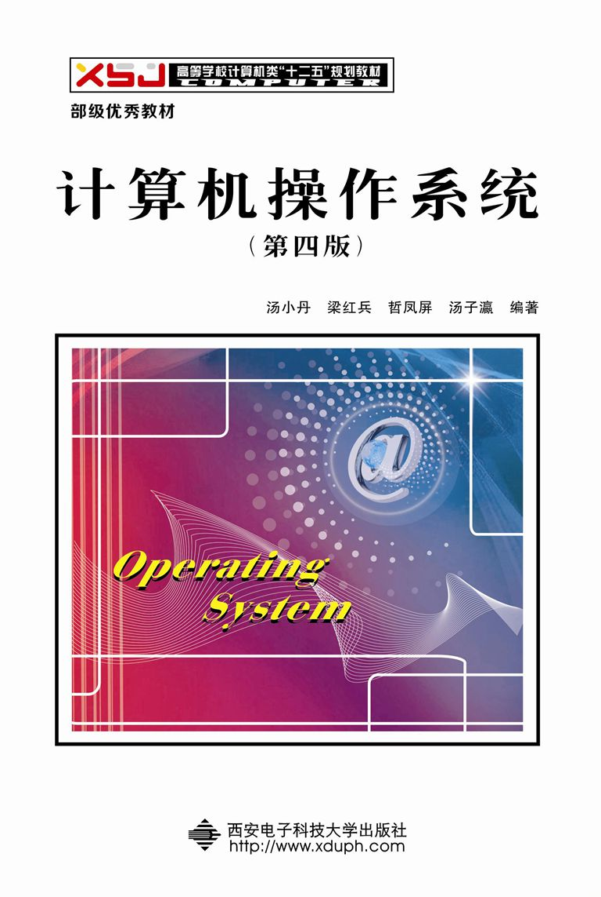

课件内容
课件内容来自汤小丹等编著的计算机操作系统(第四版)，部分根据课程需要进行修改。原版课件可从 这里下载，请各位同学自行取用。

论文阅读
课程阅读的论文请从最近三届的OSDI(偶数年11月召开，最近一届的论文见这里)或SOSP(奇数年10月召开，最近一届的论文见这里)会议上选择，尽可能去作者主页寻找更多有用资源。论文阅读自由组队，每组不超过2人，如果要实验验证则每组可3人。另外，课程也提供以下论文作为选择，先到先得，具体如下：
- Martín Abadi, Paul Barham, Jianmin Chen, et al. TensorFlow: A System for Large-Scale Machine Learning. in Proc. the 12th USENIX Symposium on Operating Systems Design and Implementation, Nov. 2016, Savannah, USA. [paper]
- Joao Martins, Mohamed Ahmed, Costin Raiciu, et al. ClickOS and the Art of Network Function Virtualization. in Proc. the 11th USENIX Symposium on Networked Systems Design and Implementation, Apr. 2014, Seattle, USA. [paper]
- Jeffrey Dean, Sanjay Ghemawat. MapReduce: Simplified Data Processing on Large Clusters. in Proc. the 6th Symposium on Operating Systems Design and Implementation, Dec. 2004, San Francisco, USA. [paper]
- Matei Zaharia, Mosharaf Chowdhury, Michael J. Franklin, et al. Spark: Cluster Computing with Working Sets. in Proc. the 2nd USENIX Workshop on Hot Topics in Cloud Computing, Jun. 2010, Boston, MA. [paper]
- Silas Boyd-Wickizer, Haibo Chen, Rong Chen, et al. Corey: An Operating System for Many Cores. in Proc. the 8th Symposium on Operating Systems Design and Implementation, Dec. 2008, San Francisco, USA. [paper]
- Ronghui Gu, Zhong Shao, Hao Chen, et al. CertiKOS: An Extensible Architecture for Building Certified Concurrent OS Kernels. in Proc. the 12th USENIX Symposium on Operating Systems Design and Implementation, Nov. 2016, Savannah, USA. [paper]
- Adam Belay, George Prekas, Ana Klimovic, et al. IX: A Protected Dataplane Operating System for High Throughput and Low Latency. in Proc. the 11th USENIX Symposium on Operating Systems Design and Implementation, Oct. 2014, Broomfield, CO. [paper]
- Avi Kivity, Dor Laor, Glauber Costa, et al. OSv：Optimizing the Operating System for Virtual Machines. in Proc. the 2014 USENIX Annual Technical Conference, Jun. 2014, Philadelphia, PA. [paper]
- Sergei Arnautov, Bohdan Trach, Franz Gregor, et al. SCONE: Secure Linux Containers with Intel SGX. in Proc. the 12th USENIX Symposium on Operating Systems Design and Implementation, Nov. 2016, Savannah, USA. [paper]
- Stefan C. Müller, Gustavo Alonso, Adam Amara, et al. Pydron: Semi-Automatic Parallelization for Multi-Core and the Cloud. in Proc. the 11th Symposium on Operating Systems Design and Implementation, Oct. 2014, Broomfield, CO. [paper]
- Subramanian Muralidhar, Wyatt Lloyd, Sabyasachi Roy, et al. f4: Facebook’s Warm BLOB Storage System. in Proc. the 11th Symposium on Operating Systems Design and Implementation, Oct. 2014, Broomfield, CO. [paper]
- Suli Yang, Tyler Harter, Nishant Agrawal, et al. Split-Level I/O Scheduling. in Proc. the 25th ACM Symposium on Operating Systems Principles, Oct. 2015, Monterey, CA. [paper]
- Scott Moore, Christos Dimoulas, Dan King, et al. SHILL: A Secure Shell Scripting Language. in Proc. the 11th Symposium on Operating Systems Design and Implementation, Oct. 2014, Broomfield, CO. [paper]
注: 课程报告的模版可从[这里]下载，字体、板式、摘要、正文、参考文献及引用务必与模版一致，否则论文阅读成绩最高为原来的50%。另外，对于稍有余力的同学，可选择性完成Contiki、RT-Thread等物联网操作系统的特定模块分析，可获得额外加分。
实验内容
操作系统实验内容涵盖Shell命令入门、Linux编程、内核编译、内核模块实现、操作系统基本算法实现、最新操作系统技术分享等，所有实验都采用Ubuntu系统，请提前预习相关内容。实验报告模版请参照[这里]，务必注意格式要求。
| Linux环境及Shell命令([实验手册]1，网页[1][2]) |
Shell编程基础(参考文档[1][2][3], 两个PPT[1][2]) |
Linux内核编译([这里]提供1种方法供参考) |
Linux内核模块实现(参考[这里]的文档) |
进程创建与控制([实验手册]2和3) |
进程互斥和死锁避免([实验手册]4和9) |
| 进程通信——信号、管道和消息([实验手册]5和6) |
进程通信——共享存储和信号量([实验手册]7) |
处理器调度算法([实验手册]8) |
内存管理算法([实验手册]10和11) |
SPOOLING技术([实验手册]12)和文件系统实现([实验手册]13) |
最新操作系统技术分享(分组编号：待定) |
| 最新操作系统技术分享(分组编号：待定) |
最新操作系统技术分享(分组编号：待定) |
|
|
|
|
课后作业
课后作业共10次，将在每次理论课结束后更新，敬请关注！此外，对于题目的常见问题也将在此处更新。
- 第1章习题：8、9、11、12、13、20、21、23
- 第2章第1次习题：4、5、6、7、12、13、16、17
- 第2章第2次习题：19、21、23、26
- 第3章习题：6、7、8、11、13、14、19、23、31
- 第4章习题：6、7、9、13、18、20、25
- 第5章习题：11、13、16、20
- 第6章习题：6、8、11、16、30
- 第7章习题：6、16、21、23
- 第8章习题：11、14
随堂测验
随堂测验共10次，每次安排在课程开始前(具体时间随机，请勿错过)，以对之前学习内容进行复习。
软件系统
Vagrant：该软件可方便设置想要的虚拟机，其底层支持VirtualBox、VMware甚至AWS作为虚拟机系统。具体的安装配置见这里，官方站点见这里。
QEMU(使用见这里)：其为广泛使用的开源计算机仿真器和虚拟机。当作为仿真器时，可以在一种架构(如PC机)下运行另一种架构(如ARM)下的操作系统和程序。通过动态转化，可以获得很高的运行效率。
当QEME作为虚拟机时，可以使用xen或kvm访问CPU的扩展功能(HVM)，在主机CPU上直接执行虚拟客户端的代码，获得接近于真机的性能表现。其他的还有VirtualBox、Virtualenv、Ubuntu，上课之前好好去了解一下。
|